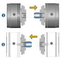
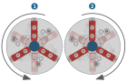
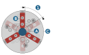
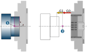
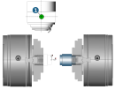
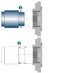
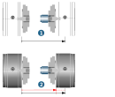

Transfer
Program the transfer of the turning model for machining operations with main and counter spindle.
The two tool types Parting tool and Recessing tool are supported for the transfer.
Transfer strategy
With parting: Enable to allow Parting of a long component during transfer from the main spindle to the counter spindle. Control the parting process on the following dialog pages. The parameters are only available if the With parting function is activated.
Cleanup tool Activate to program the cleaning up of the tool.
Transfer parameter
Transferdirection: UseMain to counterspindle (1) or Counter to mainspindle (2) to set the transfer direction of the component.
|  |
Spindle rotation: Programming can take place without spindle rotation (option: None) or with spindle rotation (options: Clockwise (1) / Counterclockwise (2).
|  |
Spindle speed: Set the spindle speed for the transfer with a rotating spindle.
Angle offset: (1) To be used for shorter parts (A) or for parts where, due to their shape, the same angular position of both clamping jaws is not possible during transfer. The angle offset rotates the clamping jaws (B) of the spindle that holds the part (C) by the defined value and so ensures that the part is transferred safely.
|  |
Transferposition: (1) Select a point on the Z axis of the local coordinate system (LCS) to set a safe transfer position. The value corresponds to the distance of the selected point to the origin of the local coordinate system (LCS) of the main spindle.
Feed rate reduction: (2) Select a point on the Z axis of the local coordinate system (LCS) from which the counter spindle moves at reduced feedrate to the transfer position.
Reduced feed rate: Define the reduced feedrate for the movement of the counter spindle up to the transfer position.
|  |
Safety
Toolsafety position: (1) Define a safety position (= parking position) for the tool during the transfer of the part. The values displayed for Z and X define the distance to the origin of the local coordinate system (LCS) in the Z and X directions.
|  |
Optional parameters
Chuck washing Activate to optionally clean the chuck.
Fixed stop: Do not activate (1) to move the machine to a fixed transfer position. Activate (2) to move to defined contact pressure before closing the spindle for a given part geometry.
(1) Function is not enabled, (2) Function is enabled.
|  |
Working position counter spindle: Use Automatic (1) to move the counter spindle to a position with maximum distance to the main spindle. Use Manual (2) to move the counter spindle to the manually defined value. The component is then machined in the counter spindle.
|  |